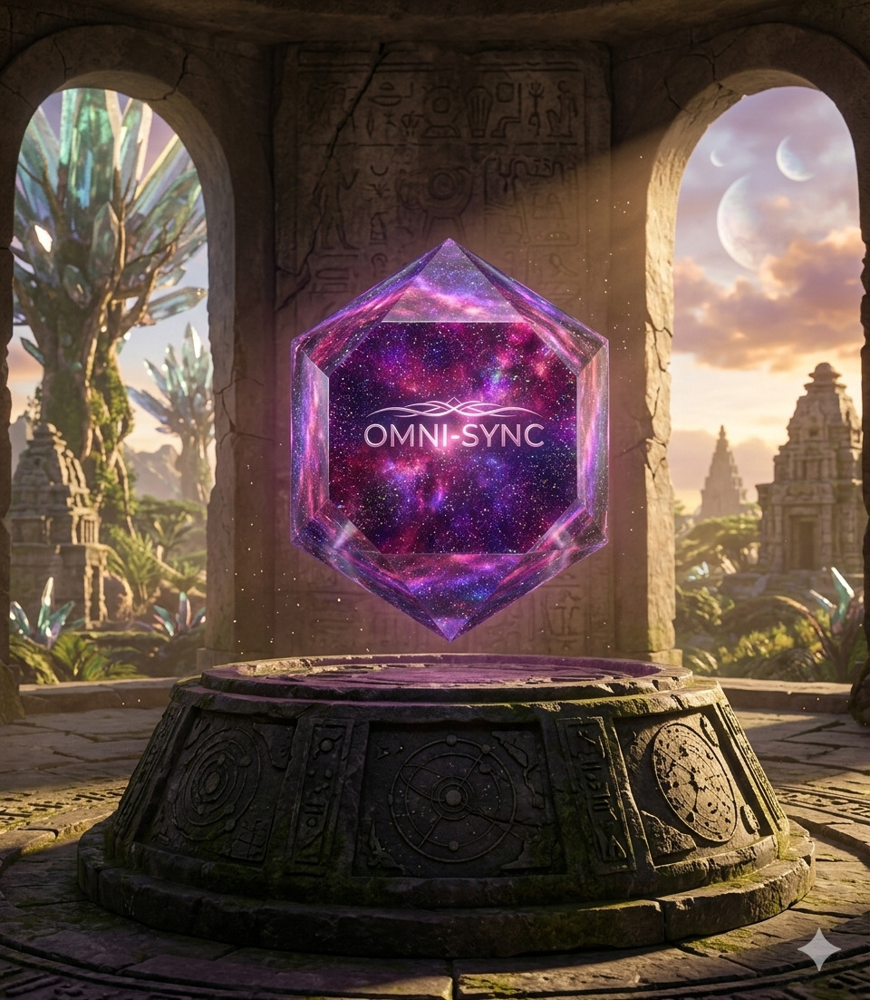
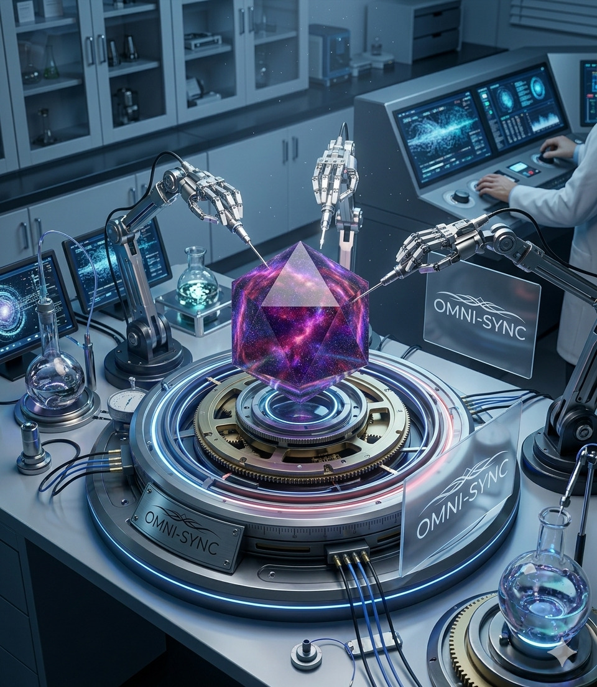

Наступний крок в еволюції матерії
Кристал Omni-Sync — це не просто мінерал, а інтелектуальна гібридна структура. Він був розроблений для подолання «фізичної стелі» сучасних матеріалів, об’єднуючи в собі фотонні, електронні та квантові властивості в межах однієї решітки.
На відміну від кремнію чи рубіну, Omni-Sync використовує градієнтну структуру ізотопів, що дозволяє керувати потоком частинок без енергетичних втрат.


| Властивість | Показник |
|---|---|
| Теплопровідність | Екстремально висока (без перегріву) |
| Пропускна здатність | До 1 Тбіт/с на наноканал |
| Стійкість | До агресивних середовищ та радіації |
| Квантова стабільність | 99.9% при кімнатній температурі |
Завдяки лазерній корекції дефектів решітки, кристал не нагрівається навіть при екстремальних обчислювальних навантаженнях.
Можливість одночасної роботи з різними довжинами хвиль, що робить його ідеальним для оптоволоконних систем нового покоління.
Використання як стабільного кубіта у квантових комп'ютерах, що вирішує проблему швидкої декогеренції.
Синхронізований рух електронів та фотонів забезпечує швидкість передачі даних у 100 разів вищу за існуючі аналоги.
Omni-Sync — це перехід від використання того, що дає природа, до програмування матерії під конкретні задачі людства. Це фундамент для створення штучного інтелекту нового рівня та міжзоряного зв'язку.